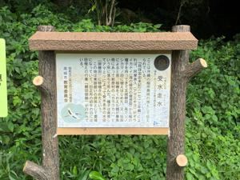
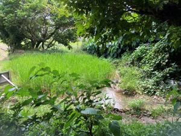
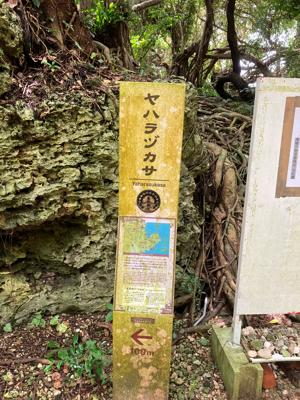
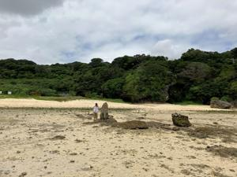
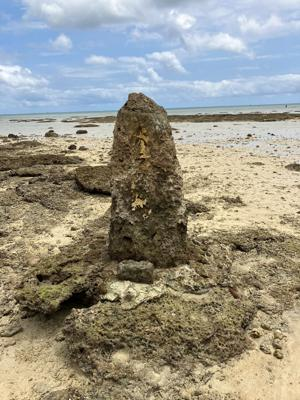

うるがいの話 ある日
最新: １１番目ヤハラヅカサへ行く【うるがいの話 ある日】とは 一日だけのプログです
『うるがいの話』の最新一日だけのプログで、通信料が少なく経済的だ。カニの画像をクリックすると全ての日付が載る『うるがいの話』サイトを表示します
|
|
【うるがいの話】 うるがい(ｳﾙｶﾞｲ urugai)とは、『もずくがに』の名前でとても大きくなります。 |
|---|---|
|
|
【カミマヤーの話】 猫のことを方言でマヤーといいます。カミマヤー（kamimayaa）とは、神の猫のことです。 |
|
【たながぁの音楽】 たながぁ（ﾀﾅｶﾞｰ tanagaa）とは手長えびのことで、何種類かあり大きいのは車 エビぐらいになります。 |

|
【ぶながぁの話】 ぶながぁ(ﾌﾞﾅｶﾞｰ bunagaa)とは、赤い髪の毛、赤い身体、そして身長は１ｍ２０ｃｍ ぐらい、川の蟹を食べているの目撃された。場所は沖縄県国頭郡大宜味村のと ある村僕の隣近所に住んでいる爺さんから、聞いた話です。 |
|
|
【ギーマの話】 ギーマ(giima)とは、山原の里山に咲くスズランに似た、 花を付けます。実は食べられます、 気が付くと口の周りが紫になっています。 |
2023年04月21日 (金）１１番目ヤハラヅカサへ行く
18:36
   
オジサン、受水走水(うきんじゅはいんじゅ)は何処ですかね、もう３０分もウ
ロウロしていると尋ねると、２００メートル先（実際は５百メートルほど）の
駐車場の向かいにあるよと教えられる。そして、ぶじに受水走水を見てバイク
の戻ると、タクシーを待たせたまま、ウロウロしている観光客らしい女性が私
のところへ近づき、Ｕターンできるところはありますか、・・・、普通の日な
のにこんなに混んでいるですかといろいろ尋ねられる。ええ、明日は浜下りと
いってもっと込みますよと答える。アマミキヨが沖縄本島に降り立った際、最
初に足を降ろした場所と伝えられているヤハラヅカサの岩から、浜を眺める。

１８時１８分 ビットコインの総資産 ￥１０、８６８（↓４１８）